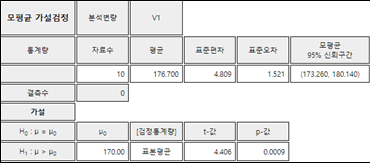

7장 한 모집단 모수의 가설검정
🎲 🎴 ♥ ♦ ♣ ♠
7.2 모분산 가설검정
7.3 모비율 가설검정
7.4 α와 β를 같이 고려하는 가설검정
[7장 pdf]
모집단의 모수가 궁금하여 이를 6장처럼 표본분포를 이용하여 추정하는 문제도 있지만 모수의 값에 대한 두 가지 가설이 타당한지에 관심이 있을 수도 있다.
이러한 모수에 대한 가설을 검정하기 위해서도 표본을 추출하여 결정을 하는데 이 장에서는 한 모집단 모수의 가설검정에 대하여 알아보자.
- 모평균 가설검정
- 모분산 가설검정
- 모비율 가설검정
을 살펴보고 1종오류와 2종오류를 같이 고려하는 가설검정을 설명한다.
7.1 모평균 가설검정
모평균 가설검정에 대한 예는 다음과 같다.
1) 어느 과자제품의 겉봉지에 용량이 200g이라 표시되어 있다. 과연 표시된 용량만큼 과자가 들어있을까?
2) 어느 전구공장에서 새로 개발한 전구가 과거의 것보다 훨씬 전구 수명이 길다고 선전한다. 과연 이 선전이 믿을만 할까?
3) 금년도 대입 학력고사를 치르고 난 직후 학생들은 영어 성적 평균이 5점정도 작년보다 증가될 것이라고 한다. 이것이 사실인지 어떻게 조사할 수 있나?
가설검정(hypothesis testing)은 표본을 이용하여 미지의 모집단 모수에 대한 두 가지 가설
\(H_0\)와 \(H_1\)를 놓고 어느 가설을 선택할 것인지 통계적으로 의사결정을 하는 것이다. 여기서 \(H_0\)를
귀무가설(null hypothesis), \(H_1\)을 대립가설(alternative hypothesis)이라 부른다.
두 개의 가설 중 하나를 선택하는 기준은 표본통계량이 어느 가설에 확률적으로 가까운가를 표집분포 이론에 근거하여
기준값(critical value) C를 선정한다. 이 기준값보다 작거나 크거나에 따라 한 가설이 선택된다.
이러한 선택방법에 의해 한 가설을 선택하게 되면 반드시 그 결정에는 두 가지 오류의 가능성이 있다. 즉,
\(H_0\)가 참일 때 \(H_1\)을 채택하는 1종오류(Type I Error)와 \(H_1\)이 참일 때
\(H_0\)를 채택하는 2종오류(Type II Error)가 있다. 이들을 표로 요약하면 다음과 같다.
표 7.1 가설검정의 오류
|
실제
\(\small H_0\) 참 |
실제
\(\small H_1\) 참 |
| 검정결과 : \(\small H_0\) 채택 |
옳은 결정 |
2종오류 |
| 검정결과 : \(\small H_1\) 채택 |
1종오류 |
옳은 결정 |
대개 경우에 귀무가설 \(H_0\)는 기존의 알려져 있는 사실로 정하고, 대립가설 \(H_1\)은 새로운 사실 또는 현재의 믿음에
변화가 있는 사실을 정한다. 그래서 두 가설 중 하나를 선택할 때, '확실한 근거가 있기 전에는 대립가설(변화된 사실)을
선택하지 않고 귀무가설(현재의 사실)을 받아들인다’는 것이 가설검정의 기본적인 생각이다. 이러한 가설검정을
보수적 의사결정방법 (conservative decision making)이라고 한다.
즉, 1종오류의 확률(α로 표시)을 줄이려는 의사결정 방법이다. 2종오류의 확률(β)까지 같이
고려하는 가설검정은 7.4설에서 설명한다.
일반적으로 모평균에 대한 가설검정에서 대립가설의 형태는 크게 다음 세 가지이다.
| 가설형태 |
설명 |
1) \( \; H_0 : \mu = \mu_0 \)
\(\quad\,\, H_1 : \mu > \mu_0 \) |
1)은 \(H_0\) 표집분포 오른쪽에 기각역을 가지므로 우측검정(right-sided test)이라 부른다 |
2) \( \; H_0 : \mu = \mu_0 \)
\(\quad\,\, H_1 : \mu < \mu_0 \) |
2)는 \(H_0\) 표집분포 왼쪽에 기각역을 가지므로 좌측검정(left-sided test)이라 부른다. |
3) \( \; H_0 : \mu = \mu_0 \)
\(\quad\,\, H_1 : \mu \ne \mu_0 \) |
3)은 \(H_0\) 표집분포 양편에 기각역을 가지므로 양측검정(two-sided test)이라 부른다. |
모표준편차를 알 경우 각각의 형태에 대한 가설의 선택기준은 표 7.2와 같다. 여기서 는 유의수준이다.
표 7.2 모평균의 가설검정 - 모분산 \(\sigma^2\)을 알 경우
| 가설형태 |
선택기준 |
1) \( \; H_0 : \mu = \mu_0 \)
\(\quad\,\, H_1 : \mu > \mu_0 \) |
만일 \( \frac {\overline X - \mu_0}{ \frac {\sigma}{\sqrt{n}} } > z_{α} \) 아면, \( H_0 \) 기각 |
2) \( \; H_0 : \mu = \mu_0 \)
\(\quad\,\, H_1 : \mu < \mu_0 \) |
만일 \( \frac {\overline X - \mu_0}{ \frac {\sigma}{\sqrt{n}} } < - z_{1-α} \) 이면, \( H_0 \) 기각 |
3) \( \; H_0 : \mu = \mu_0 \)
\(\quad\,\, H_1 : \mu \ne \mu_0 \) |
만일 \( \left | \frac {\overline X - \mu_0}{ \frac {\sigma}{\sqrt{n}} } \right | > z_{α/2} \) 이면, \( H_0 \) 기각 |
|
참고: 1)의 \(H_0\) 는 \(\; H_0 : \mu \le \mu_0 \)로 , 2)는 \(\; H_0 : \mu \ge \mu_0 \)로 쓸 수 있다.
|
선택기준에 사용되는 다음 식
$$\small
\frac {\overline X - \mu_0}{ \frac {\sigma}{\sqrt{n}} }
$$
를 검정통계량(test statistic)이라고 부른다.
관찰된 표본평균의 값을 기준값으로 하였을 때의 1종오류 확률을 계산하면 채택 / 기각 여부를 알 수 있는데 이를
p-값(-value)이라 한다. 즉, p-값은 측정된 표본평균이 모든 가능한 표본평균 중에서 어디에 위치하고
있는지를 알려 준다. p-값이 분석자가 고려하는 유의수준 α보다 작으면 표본평균이 기각역에 있다는 것을
뜻하기 때문에\(H_0\) 를 기각한다. 대부분의 통계패키지에서는 p-값을 계산하여 준다.
모분산 \(\sigma^2\)를 모르는 경우 모집단이 정규분포를 따른다면 검정통계량
$$\small
\frac {\overline X - \mu_0}{ \frac {S}{\sqrt{n}} }
$$
는 자유도가 (n-1)인 t 분포를 따르므로 모평균 가설검정은 표 7.2의 선택기준에서 표준정규분포 대신 t 분포를
사용하여 다음과 같다. 단, 표본분산을 이용한 모평균의 가설검정은 모집단이 정규분포를 한다는 가정이 필요하다.
표 7.3 모평균의 가설검정 - 모분산 \(\sigma^2\)을 모르는 경우 (모집단이 정규분포)
| 가설형태 |
선택기준 |
1) \( \; H_0 : \mu = \mu_0 \)
\(\quad\,\, H_1 : \mu > \mu_0 \) |
만일 \( \frac {\overline X - \mu_0}{ \frac {S}{\sqrt{n}} } > t_{n-1; α} \) 아면, \( H_0 \) 기각 |
2) \( \; H_0 : \mu = \mu_0 \)
\(\quad\,\, H_1 : \mu < \mu_0 \) |
만일 \( \frac {\overline X - \mu_0}{ \frac {S}{\sqrt{n}} } < - t_{n-1; 1-α} \) 이면, \( H_0 \) 기각 |
3) \( \; H_0 : \mu = \mu_0 \)
\(\quad\,\, H_1 : \mu \ne \mu_0 \) |
만일 \( \left | \frac {\overline X - \mu_0}{ \frac {S}{\sqrt{n}} } \right | > t_{n-1; α/2} \) 이면, \( H_0 \) 기각 |
|
참고: 1)의 \(H_0\) 는 \(\; H_0 : \mu \le \mu_0 \)로 , 2)는 \(\; H_0 : \mu \ge \mu_0 \)로 쓸 수 있다.
|
🎲 예 7.1
남자 대학생 10명을 표본 추출하여 신장을 조사하니 다음과 같다. (단위 cm)
172 175 178 182 176 180 169 185 173 177
모평균이 175cm 인지 아니면 이보다 큰지 유의수준 5%로 『eStatU』을 이용하여 가설검정하여 보자.
풀이
『eStat』에서 시트에 [그림 7.1]과 같이 데이터를 입력한 후 모평균 가설검정 아이콘을 클릭하고 변량선택박스에서
'분석변량'을 V1 선택하면 데이터의 평균-신뢰구간 점그래프가 나타난다([그림 7.2]).

[그림 7.2] 데이터의 점그래프 및 평균 신뢰구간
그래프 창 밑의 선택 창([그림 7.3])에서 '히스토그램'을 클릭하면 [데이터에 대한 히스토그램과 정규분포곡선이
출력되어 데이터가 정규분포인지 대략 검사할 수 있다. (11장에서 설명).
[그림 7.3] 모평균 가설검정의 선택사항
[그림 7.4] 데이터의 히스토그램과 정규분포 곡선
선택 창에서 [그림 7.3]과 같이 \(μ_0\) = 170을 입력하고, 대립가설 형태를 우측검정, 유의수준을 5%로 선택하고
[t 검정(Z)] 버튼을 누르면 [그림 7.5]와 같은 검정통계량의 분포인 t 분포 그래프가 나타나고 결과저장창에
검정결과가 나타난다([그림 7.6]). 선택 창에서 Z 검정을 선택할 수도 있다. 이 경우에는 모표준편차 σ를 입력하여야 한다.
[그림 7.5] 모평균 가설검정 그래프

[그림 7.6] 모평균 가설검정의 결과
같은 예를 『eStatU』를 이용하여 가설검정할 수 있다.
🎲 예 7.2
위의 [예 7.1]을 『eStatU』을 이용하여 가설검정하여 보자.
풀이
『eStatU』 주메뉴에서 '가설검정: 모평균 μ'를 선택하면 [그림 7.7]과 같은 화면이 나타난다. 여기에서
검정할 값 \(μ_0\)= 175를 입력하고, 두 번째 가설 우측검정을 선택하고, 표본자료를 입력한후
[실행] 버튼을 누르면 신뢰구간이 계산되고 [그림 7.8]과 같은 검정결과가 나타난다.
[Testing Hypothesis : Population Mean μ ]
[그림 7.8] 『eStatU』모평균 가설검정 결과
7.2 모분산 가설검정
모집단의 분산을 가설검정하기 위한 예는 다음과 같다.
1) 한 자동차회사에 현재 볼트를 납품하는 부품회사의 볼트는 직경이 평균 7mm, 분산이 0.25라고 한다. 최근 경쟁회사는 자기회사의 볼트는 직경의 평균이 7mm, 분산이 0.16이라고 주장하면서 납품을 신청하고 있다. 과연 이 주장이 맞는지 어떻게 알아볼 수 있는가?
2) 작년도 대입 학력고사 수학점수의 분산이 100 이라 한다. 금년도 수학 문제가 작년보다 너무 쉽다고 한다. 학력고사 성적의 분산이 작년보다 작아졌는지 어떻게 알아 볼 수 있나?
5장에서 표본분산(\(S^2\))의 분포는 모집단의 분산이 \(\sigma^2\)인 정규분포를 따를 때 표본의 크기가 n 이라면
\(\frac{(n-1) S^2}{\sigma^2}\)은 자유도가 (n-1)인 카이제곱분포를 하는 것을 알았다. 이 이론을 이용하면 모분산에 대한 가설검정을 다음과 같이 할 수 있다.
표 7.4 모분산의 가설검정 - 모집단이 정규분포인 경우
| 가설형태 |
선택기준 |
1) \( \; H_0 : \sigma^{2} = \sigma^{2}_0 \)
\(\quad\,\, H_1 : \sigma^{2} > \sigma^{2}_0 \) |
만일 \( \frac{(n-1)S^2}{\sigma^2} > \chi^2_{n-1: α} \) 이면, \( H_0 \) 기각 |
2) \( \; H_0 : \sigma^{2} = \sigma^{2}_0 \)
\(\quad\,\, H_1 : \sigma^{2} < \sigma^{2}_0 \) |
만일 \( \frac{(n-1)S^2}{\sigma^2} < \chi^2_{n-1: 1-α} \) 이면, \( H_0 \) 기각 |
3) \( \; H_0 : \sigma^{2} = \sigma^{2}_0 \)
\(\quad\,\, H_1 : \sigma^{2} \ne \sigma^{2}_0 \) |
만일 \( \frac{(n-1)S^2}{\sigma^2} > \chi^2_{n-1: α/2} \) 또는 \( \frac{(n-1)S^2}{\sigma^2} < \chi^2_{n-1: 1-α/2} \) 이면, \( H_0 \) 기각 |
|
참고: 1)의 \(H_0\) 는 \(\small \; H_0 : \sigma^{2} \le \sigma^{2}_0 \)로 , 2)는 \(\small \; H_0 : \sigma^{2} \ge \sigma^{2}_0 \)로 쓸 수 있다.
|
🎲 예 7.3
남자 대학생 10명을 표본 추출하여 신장을 조사하니 다음과 같다. (단위 cm)
172 175 178 182 176 180 169 185 173 177
모분산이 \(5^2\)인지 아닌지 유의수준 5%로 『eStat』를 이용하여 가설검정하여 보자.
풀이
『eStat』에서 시트에 [그림 7.9]와 같이 데이터를 입력한 후 모분산 가설검정 아이콘 를 클릭하고
'변량선택박스'에서 V1을 선택하면 [그림 7.10]과 같은 데이터의 점그래프와 (평균) ± (표준편차) 구간이 나타난다.
[그림 7.10] 모분산의 가설검정에서 점그래프와 (평균) ± (표준편차) 구간
그래프 창 밑의 선택창([그림 7.11])에서 \(\sigma^2_0\) = 25를 입력하고, 대립가설 형태를 우측검정,
유의수준을 5%로 선택하고 '\(\chi^2\) 검정' 버튼을 누르면 [그림 7.12]와 같은 가설검정 결과 그래프와 결과표([그림 7.13])가 나타난다.
[그림 7.11] 모분산 가설검정의 선택사항
[그림 7.12] 모분산 가설검정 결과
[그림 7.13] 모분산 가설검정 결과
같은 예를 『eStatU』를 이용하여 가설검정할 수 있다.
🎲 예 7.4
위의 [예 7.3]을 『eStatU』을 이용하여 가설검정하여 보자.
풀이
『eStatU』 주메뉴에서 '가설검정: 모분산 \(\sigma^2\)'를 선택하면 [그림 7.14]와 같은 화면이 나타난다.
여기에서 검정할 값 \(\sigma^2_0\) = 175를 입력하고, 양측검정을 선택하고, 표본자료를 입력한후
[실행] 버튼을 누르면 신뢰구간이 계산되고 [그림 7.15]와 같은 검정결과가 나타난다.
[]
[그림 7.15] 『eStatU』모분산 가설검정 결과
7.3 모비율 가설검정
모집단의 미지의 비율에 대한 가설검정이 필요한 몇 가지 예를 들어보자.
1) 금년도 대통령 선거에서 특정 후보의 지지율이 과연 50%를 넘을까?
2) 작년도 실업률이 7%이었다고 한다. 올해의 실업률은 높아졌는가?
3) 자동차 부속품 1만개를 배로 수입하는데 과거의 경험으로 보아 이중 2%가 불량품이었다. 이번에도 불량품이 2%일까?
표본의 크기가 충분히 클 때 표본비율(\(\hat p\))의 표집분포는 평균이 모비율(\(p\))이고 분산이
\( \frac { p (1- p )}{n} \) 인 정규분포에 근사하게 된다. 따라서 대표본일 때의 모평균 가설검정과 유사하게 모비율의 가설검정을 다음과 같이 할 수 있다.
표 7.5 모비율의 가설검정 - 대표본일 경우
| 가설형태 |
선택기준 |
1) \( \; H_0 : p = p_0 \)
\(\quad\,\, H_1 : p > p_0 \) |
만일 \( \frac {\hat p - p_0}{ \sqrt { \frac {p_0 (1-p_0)}{n} } } > z_{α} \) 이면, \( H_0 \) 기각 |
2) \( \; H_0 : p = p_0 \)
\(\quad\,\, H_1 : p < p_0 \) |
만일 \( \frac {\hat p - p_0}{ \sqrt { \frac {p_0 (1-p_0)}{n} } } < - z_{α} \) 아면, \( H_0 \) 기각 |
3) \( \; H_0 : p = p_0 \)
\(\quad\,\, H_1 : p \ne p_0 \) |
만일 \( \left | \frac {\hat p - p_0}{ \sqrt { \frac {p_0 (1-p_0)}{n} } } \right | > z_{α/2} \) 이면, \( H_0 \) 기각 |
|
참고: 1)의 \( \small H_0\) 는 \(\small \; H_0 : p \le p_0 \)로 , 2)는 \(\small \; H_0 : p \ge p_0 \)로 쓸 수 있다.
|
『eStatU』를 이용하여 모비율의 가설검정을 할 수 있다.
🎲 예 7.5
한 지역의 국회의원 선거여론조사를 지난달 실시한 결과 특정후보의 지지율이 60%이었다. 최근에 지지율에 변동이 있는지 알아보기 위해 100명을 단순임의추출하였더니 55명이 지지를 하였다. 특정후보에 대한 현재 지지율이 60%에서 변동이 있는지 유의수준 5%로 『eStatU』을 이용하여 가설검정하여 보자.
풀이
『eStatU』주메뉴에서 '가설검정: 모비율 p'를 선택하면 [그림 7.16]과 같은 화면이 나타난다.
여기에서 검정할 값 \(p_0\) = 0.6을 입력하고, 양측검정을 선택하고, 유의수준을 선택한 후,
표본크기 n = 100와 표본비율 \(\hat p\) = 0.55를 입력한 후 [실행] 버튼을 누르면
신뢰구간이 계산되고 [그림 7.17]과 같은 검정결과가 나타난다.
[Testing Hypothesis : Population Proportion p]
[그림 7.17] 『eStatU』를 이용한 모비율 가설검정 결과
7.4 α와 β를 같이 고려하는 가설검정
지금까지 알아본 가설검정은 보수적 의사결정 방식이므로 귀무가설을 충분한 반대근거가 없는 한 지키려는 사실, 대립가설을
새로운 사실로 하여 1종오류(귀무가설이 참인데도 기각하는 오류)의 확률(α)을 작게 하는 선택기준을 만들었다.
따라서 2종오류의 확률(β)은 선택기준에 전혀 고려되지 않았다. 하지만 때때로 어느 사실을 귀무가설로 하고,
어느 것을 대립가설로 정해야 하는지가 애매한 경우가 있으며, 문제에 따라서 두 종류의 오류가 모두 현실적으로 중요하여
동시에 고려해야 할 때가 있다. 이 때 만일 표본의 크기를 분석자가 정할 수 있다면 α와 β를 같이 고려하는 가설검정을 할 수 있다.
β와 검정력
『eStatU』를 이용하여 2종오류의 확률을 구하여 보자.
🎲 예 7.6
모평균의 두 가설 \(H_0 : μ = 1500\), \(H_1 : μ = 1600\)이 있을 때 모표준편차는 σ = 200,
표본의 크기는 n=30 이다. 유의수준이 5%일 때 2종오류 β를 『eStatU』를 이용하여 구하여 보자.
풀이
유의수준이 5%일 때 가설의 선택기준은 다음과 같다.
'\(\small \overline X\) < 1500 + (1.645)\(\frac{200}{\sqrt{30}}\) = 1560.06 이면 \(H_0\) 기각'
따라서 '\(H_1\)이 참인데 \(H_0\)가 맞다'라고 하는 2종오류의 확률은 다음과 같다.
β = \(\small P( \overline X\) < 1560.06 | \(H_1\) 이 참일 때)
= \(\small P( \frac { (\overline X -1600)} {\frac{200}{\sqrt{30}} } < \frac { 1506.06 -1600} {\frac{200}{\sqrt{30}} } ) \)
= \(\small P( Z < -1.09) = 0.137 \)
『eStatU』에서 '가설검정 μ 실험: C, β 계산'을 선택하면 [그림 7.18]과 같은 화면이 나타난다.
여기에서 \(μ_0 = 1500\), \(μ_1 = 1600\), \(σ = 200\), \(n = 30\),
\(α = 0.05\)를 입력하고 [실행] 버튼을 누르면 C, β가 계산되고 [그림 7.19]와
같은 실험 창이 나타난다. 여기에서 \(μ_1\), α, n을 변화시키며 β의 변화를 관찰할 수 있다.
[Testing Hypothesis : Population Mean μ ]
[그림 7.19] β의 변화 실험 창
일반적으로 두 가설검정에 대한 판별력 비교에는 대립가설이 참일 때 이 대립가설을 맞을 확률인 검정력(power of test)이 이용된다.
검정력 = 1 - (2종오류의 확률) = 1 - β
검정력이 크면 가설검정의 판별력이 커진다. 이러한 2종오류의 확률과 검정력을 임의의 대립가설 \(H_1 : μ = μ_1\)에
대해서 구할 수 있는데, 검정력 1 - β는 \(μ_1\)의 값이 변함에 따라 다른 값을 가지므로 \(μ_1\)에 대한 함수이다.
이 함수를 검정력 함수(power function)라고 한다.
α와 β 가설검정
만일 표본의 크기가 미리 정하여져 있지 않고 분석자가 정할 수 있다면 α와 β를 원하는 수준으로 하는 가설검정을 할 수 있다.
🎲 예 7.7
가설검정 \(H_0 : μ = 1500\), \(H_1 : μ = 1570\)이 있을 때 1종오류의 확률(α)을 5%,
2종오류의 확률(β)을 10%로 하는 표본의 크기와 이때의 선택기준을 『eStatU』를 이용하여 구하여 보자.
풀이
표본의 크기를 n 이라 하고 임계값을 C라고 할 때, 1종오류와 2종오류의 확률은 정의에 의해 다음과 같다.
α = \(\small P( \overline X\) > C | \(H_0\) 이 참일 때)
β = \(\small P( \overline X\) < C | \(H_1\) 이 참일 때)
표본평균의 표집분포이론에서 \(H_0 \)가 참일 때는 \(\small \overline X\)의 분포는
\(N(1500, \frac{200^2}{n} )\) 이고, \(H_1\)이 참일 때는 \(\small \overline X\)의 분포는
\(N(1570, \frac{200^2}{n} )\) 이다. 따라서 α = 0.05, β = 0.10,
\(z_{0.05}\) = 1.645, \(z_{0.90}\) = -1.280 이므로 다음 두 식이 성립된다.
\(C = 1500 + 1.645 × \frac{200}{\sqrt n} \)
\(C = 1570 - 1.280 × \frac{200}{\sqrt n} \)
위의 두 식은 미지수가 n과 C인 연립방정식이므로 해를 구하면 n = 69.8, C = 1539.4 가 된다.
즉, 표본의 크기는 대략 70이고, 선택기준은 다음과 같다.
'\(\small \overline X > 1539.4\) 이면 \(H_0 \)를 기각'
『eStatU』에서 '가설검정 μ 실험: C, n 계산'을 선택하면 [그림 7.20]과 같은 화면이 나타난다.
여기에서 \(μ_0 = 1500\), \(μ_1 = 1600\), \(σ = 200\),
\(α = 0.05\), \(β = 0.10\)를 입력하고 [실행] 버튼을 누르면 C, n이 계산되고
[그림 7.21]과 같은 실험 창이 나타난다. 여기에서 \(μ_1\), α, β를 변화시키며
C, n의 변화를 관찰할 수 있다.
[Testing Hypothesis : Population Mean μ
[그림 7.21] 『eStatU』 C, n 변화 실험 창